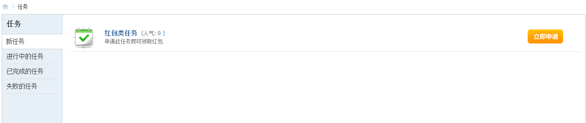
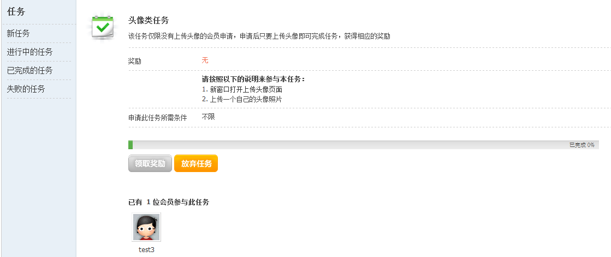

任务
站点任务功能，通过简单的设置，就可以对用户起到较强的引导作用，让用户上传自己的头像、让用户使用论坛推广、完成发布帖子、添加好友等动作，使用户在申请任务 => 完成任务 =>获得奖励过程中，持续不断的对网站投入新鲜感和热情度，也使得新用户缩短了对网站的适应时间，快速的融入站点中
新任务
显示任务列表，点击立即申请，跳转到此任务的详细介绍页面，根据提示完成任务
进行中的任务
显示用户正在进行中的任务，显示完成的百分比，完成后，将会显示领取奖励，点击可以领取完成此任务的奖励；用户也可放弃此任务不再进行